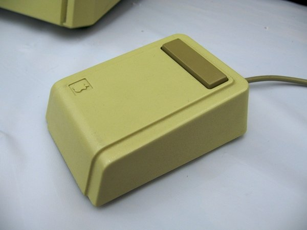
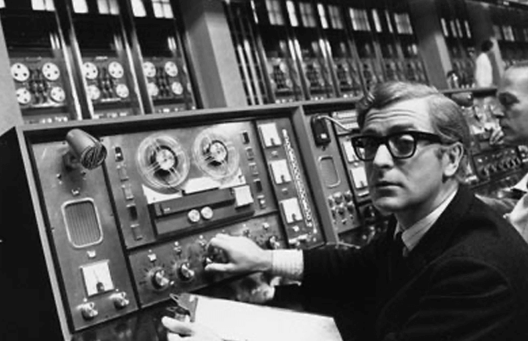
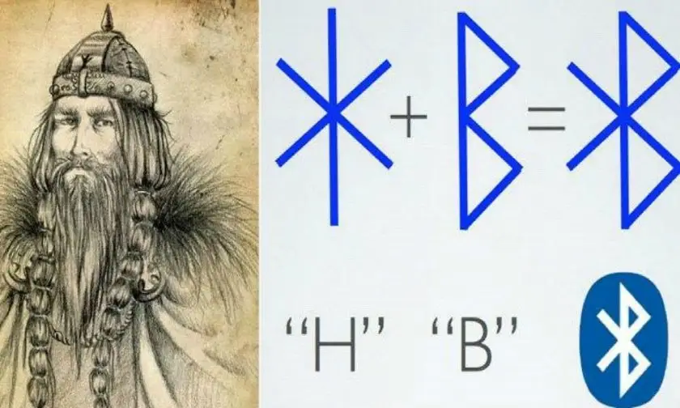

Meu primeiro post
Por: Alexandre
Boas-vindas ao meu novo blog! Aqui vou compartilhar dicas de programação e curiosidades da área de tecnologia.

Meu segundo post
Por: Alexandre
O primeiro mouse de computador foi inventado entre 1963 e 1964 pelo engenheiro norte-americano Douglas Engelbart, com a ajuda do engenheiro Bill English
article>

Meu terceiro post
Por: Alexandre
A internet surgiu na década de 1960, no contexto da Guerra Fria, com a criação da ARPANET pelos Estados Unidos.
article>

Meu quarto post
Por: Alexandre
O Bluetooth foi criado em 1994 pela empresa sueca Ericsson